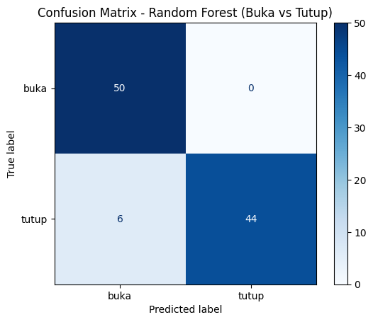
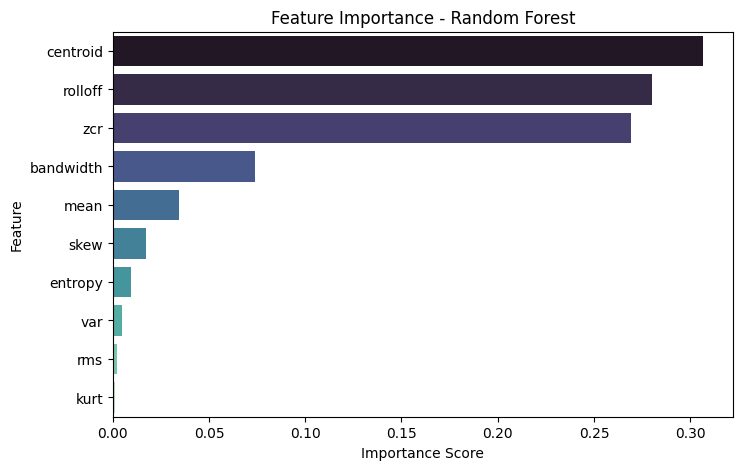

4. Modeling & Evaluation (Random Forest) Suara Buka Tutup#
1. Import & Load Data Fitur#
import pandas as pd
from sklearn.ensemble import RandomForestClassifier
from sklearn.metrics import accuracy_score, classification_report, confusion_matrix, ConfusionMatrixDisplay
import matplotlib.pyplot as plt
import seaborn as sns
import numpy as np
from sklearn.impute import SimpleImputer
import joblib
train_df = pd.read_csv("train_features.csv")
val_df = pd.read_csv("val_features.csv")
print(f"Data Train: {train_df.shape}, Data Val: {val_df.shape}")
train_df.head()
Data Train: (300, 11), Data Val: (100, 11)
| mean | var | skew | kurt | rms | zcr | centroid | bandwidth | rolloff | entropy | label | |
|---|---|---|---|---|---|---|---|---|---|---|---|
| 0 | 0.008289 | 0.007918 | 4.885885 | 50.250577 | 0.089368 | 0.018732 | 605.665806 | 755.521365 | 1204.880593 | -111.193913 | buka |
| 1 | 0.022353 | 0.016661 | 2.274273 | 12.117165 | 0.131000 | 0.030351 | 789.759494 | 1147.908386 | 1384.976474 | -66.327977 | buka |
| 2 | 0.022355 | 0.016663 | 2.274226 | 12.116864 | 0.131007 | 0.030262 | 787.535417 | 1143.620848 | 1381.550737 | -66.314897 | buka |
| 3 | 0.022768 | 0.016506 | 2.394795 | 12.654151 | 0.130477 | 0.044178 | 812.500350 | 1159.718023 | 1384.487083 | -65.294452 | buka |
| 4 | 0.022702 | 0.016509 | 2.395947 | 12.666134 | 0.130477 | 0.044334 | 816.326387 | 1165.261393 | 1393.540816 | -65.476957 | buka |
2. Pisahkan Fitur dan Label#
X_train = train_df.drop(columns=['label'])
y_train = train_df['label']
X_val = val_df.drop(columns=['label'])
y_val = val_df['label']
3. Membuat dan Latih Model Random Forest#
rf_model = RandomForestClassifier(
n_estimators=200, # jumlah pohon
max_depth=None, # biarkan pohon tumbuh penuh
random_state=42,
n_jobs=-1
)
rf_model.fit(X_train, y_train)
RandomForestClassifier(n_estimators=200, n_jobs=-1, random_state=42)In a Jupyter environment, please rerun this cell to show the HTML representation or trust the notebook.
On GitHub, the HTML representation is unable to render, please try loading this page with nbviewer.org.
RandomForestClassifier(n_estimators=200, n_jobs=-1, random_state=42)
4. Evaluasi Model di Data Validation#
y_pred = rf_model.predict(X_val)
acc = accuracy_score(y_val, y_pred)
print(f"Akurasi Model Random Forest: {acc*100:.2f}%\n")
print("=== Classification Report ===")
print(classification_report(y_val, y_pred))
joblib.dump(rf_model, 'model_results/rf_model_buka_tutup.pkl')
Akurasi Model Random Forest: 94.00%
=== Classification Report ===
precision recall f1-score support
buka 0.89 1.00 0.94 50
tutup 1.00 0.88 0.94 50
accuracy 0.94 100
macro avg 0.95 0.94 0.94 100
weighted avg 0.95 0.94 0.94 100
['model_results/rf_model_buka_tutup.pkl']
5. Confusion Matrix Visualization#
# Confusion Matrix
cm = confusion_matrix(y_val, y_pred, labels=rf_model.classes_)
disp = ConfusionMatrixDisplay(confusion_matrix=cm, display_labels=rf_model.classes_)
disp.plot(cmap='Blues')
plt.title("Confusion Matrix - Random Forest (Buka vs Tutup)")
plt.show()

6. Feature Importance#
Menunjukkan fitur mana yang paling berpengaruh dalam keputusan model.
importances = pd.Series(rf_model.feature_importances_, index=X_train.columns).sort_values(ascending=False)
plt.figure(figsize=(8,5))
sns.barplot(x=importances, y=importances.index, palette='mako')
plt.title("Feature Importance - Random Forest")
plt.xlabel("Importance Score")
plt.ylabel("Feature")
plt.show()
C:\Users\Harits Putra Junaidi\AppData\Local\Temp\ipykernel_28512\518267180.py:4: FutureWarning:
Passing `palette` without assigning `hue` is deprecated and will be removed in v0.14.0. Assign the `y` variable to `hue` and set `legend=False` for the same effect.
sns.barplot(x=importances, y=importances.index, palette='mako')

7. Prediksi Suara Buka Tutup#
import os
import librosa
import numpy as np
import pandas as pd
from scipy import stats
---------------------------------------------------------------------------
ModuleNotFoundError Traceback (most recent call last)
Cell In[7], line 2
1 import os
----> 2 import librosa
3 import numpy as np
4 import pandas as pd
ModuleNotFoundError: No module named 'librosa'
def find_audio_file():
buka_folder = "dataset48k/val/buka/"
if os.path.exists(buka_folder):
audio_files = [f for f in os.listdir(buka_folder) if f.endswith('.wav')]
if audio_files:
return os.path.join(buka_folder, audio_files[49])
return None
test_file = find_audio_file()
rf_models = joblib.load('model_results/rf_model_buka_tutup.pkl')
if test_file is None:
print("Tidak ada file audio yang ditemukan!")
else:
print(f"Menggunakan file: {test_file}")
# Preprocess
y, sr = librosa.load(test_file, sr=22050)
# durasi tidak lebih dari 1 detik
max_len = int(sr * 1.0)
if len(y) < max_len:
y = np.pad(y, (0, max_len - len(y)), mode='constant')
else:
y = y[:max_len]
y = y / np.max(np.abs(y) + 1e-6)
# Ekstraksi fitur tunggal
feat = {
"mean": np.mean(y),
"var": np.var(y),
"skew": stats.skew(y),
"kurt": stats.kurtosis(y),
"rms": np.sqrt(np.mean(y**2)),
"zcr": np.mean(librosa.feature.zero_crossing_rate(y)),
"centroid": np.mean(librosa.feature.spectral_centroid(y=y, sr=sr)),
"bandwidth": np.mean(librosa.feature.spectral_bandwidth(y=y, sr=sr)),
"rolloff": np.mean(librosa.feature.spectral_rolloff(y=y, sr=sr))
}
hist, _ = np.histogram(y, bins=50, density=True)
hist = hist[hist > 0]
feat["entropy"] = -np.sum(hist * np.log2(hist + 1e-10))
X_new = pd.DataFrame([feat])
pred_label = rf_models.predict(X_new)[0]
pred_proba = rf_models.predict_proba(X_new)[0]
print(f"\nPrediksi suara file ini adalah: **{pred_label.upper()}**")
print(f"Confidence: {max(pred_proba)*100:.1f}%")
print(f"Probabilitas: Buka={pred_proba[0]*100:.1f}%, Tutup={pred_proba[1]*100:.1f}%")
Menggunakan file: dataset48k/val/buka/buka48k-buka_199.wav.wav
Prediksi suara file ini adalah: **BUKA**
Confidence: 98.0%
Probabilitas: Buka=98.0%, Tutup=2.0%